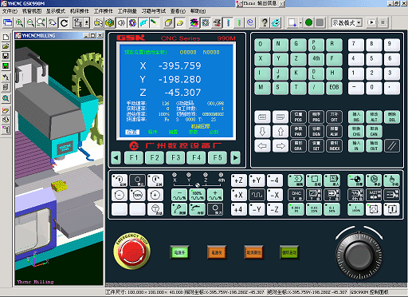

EDIT: 用于直接通过操作面板输入数控程序和编辑程序。
AUTO：进入自动加工模式。
MDI：手动数据输入。
JOG：手动方式，手动连续移动台面或者刀具。
HNDL:手摇脉冲方式。
置光标于按钮上，点击鼠标左键，选择模式
| GSK990M机床操作面板操作 |

模式选择开关：
EDIT: 用于直接通过操作面板输入数控程序和编辑程序。
AUTO：进入自动加工模式。
MDI：手动数据输入。
 REF:回参考点。
REF:回参考点。
JOG：手动方式，手动连续移动台面或者刀具。
HNDL:手摇脉冲方式。
置光标于按钮上，点击鼠标左键，选择模式
数控程序运行控制开关:
单步运行
空运行
手轮X轴选择
单程序段/手轮Z轴选择
程序跳转/手轮Y轴选择
机床主轴手动控制开关:
手动开机床主轴反转
 手动开机床主轴正转
手动开机床主轴正转
手动关机床主轴
辅助功能按钮:
 冷却液
冷却液
 润滑液
润滑液
 换刀具
换刀具
手动移动机床台面按钮:
铣床
选择移动轴,正方向移动按钮,负方向移动按钮。 快速进给
手轮进给量控制旋钮:
:
 选择手动台面时每一步的距离：0.001毫米、0.01毫米、0.1毫米、1毫米。置光标于旋钮上，点击鼠标左键选择。
选择手动台面时每一步的距离：0.001毫米、0.01毫米、0.1毫米、1毫米。置光标于旋钮上，点击鼠标左键选择。
升降速按钮:

 :快速进给升降速/手动速度升降速
:快速进给升降速/手动速度升降速
程序运行控制开关:
:循环启动
 :循环停止
:循环停止
系统控制开关：
NC启动
NC停止
紧急停止按钮 |
手轮 |
 |
 |